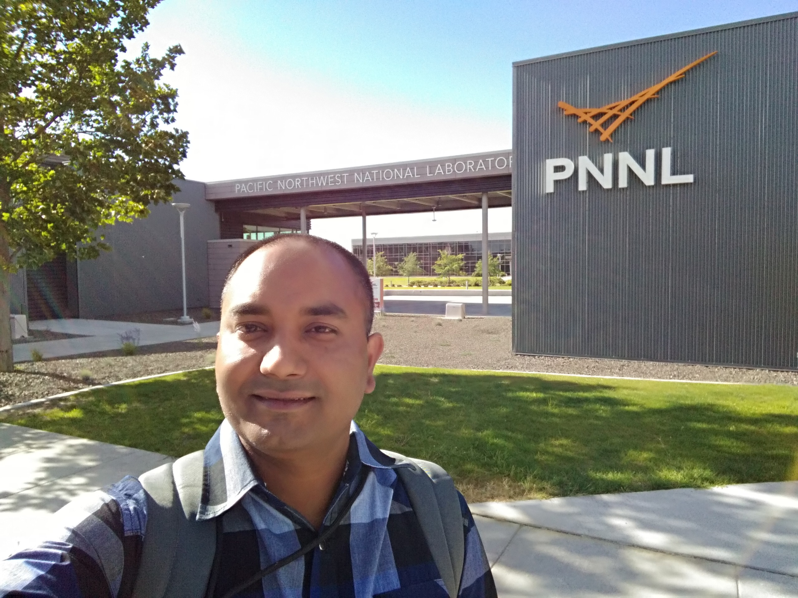

Copyright © Md. Kamruzzaman (Methun)
Experience
2020 early spring and summer is the most memorable time in my life. I along with my family is passing through a pandemic which is caused by a virus of corona group named COVID-19. The number 19 refers the first occurrence year which is 2019. The whole world is captured by this virus and it already kills few hundreds of thousands life. It affects the world economy so badly that people of all sectors are already suffering, even though government is continuously providing financial support but it is really hard to provide proper support for a single government. Due to the downgrading of business, the job market started collapsing in different domains which badly impacts on my early career after graduation.

2019 summer was another memorable summer in my life. I got internship chance in one the leading tech company named Amazon AWS. I joined as an Applied scientist Intern in the field of Machine Learning. All the team members along with my Manager and Mentor were very open minded and friendly. We had lots of fun besides works, for instance, boat picnic, weekly happy hour, etc. Everyone here are so obsessed about to make happy to their customer. I really like and enjoy the concept.
I had opportunity to handle huge volume (peta byte level) of data. Faced challenges to deal with this size of data but learned a lot on this.
I got opportunity to explore other domains, for instance, economic, product management. I applied the concept of those domain in my data analysis which ended up building a much better forecasting model on sales data.
Experience
2018 summer was a memorable summer in my life. I successfully completed my preliminary examination. I also joined in the high performance computing lab in Pacific Northwest National Laboratory as a Ph.D. intern. My responsibilities include:
- Completed a list of training regarding culture, security and behavior in the institution.
- Created a prototype in an open source project named Scalable High-performance Algorithms and Data-structures (SHAD) for benchmarks analysis.
- Used Python Data Analysis Library named Pandas to generate visually interpretable results.


KBGroup is a multinational software company whose software development branches located in Bangladesh, United Kingdom and New Zealand. I worked in Bangladesh branch from 2010 to 2015. This company provides eTicketing solutions for theaters, sports, and online shopping. It also develops solution for insurance company.
As an software developer, I developed many websites from stretch. Beside that, I also worked on ASP, OO Javascript, AJAX, and MSSql server. I have experience to develop complex query language.
Besides as a software developer, I also worked as a team lead for a specific section of the development team of 6 persons.
I served as a general manager to take care of all aspects of Bangladesh branch from 2013–2015. During this period, I experienced a lot of managerial issues those I never faced as a software developer. I worked with higher authority as well as local authorities (e.g. energy department, water supply department, local leaders and political parties, etc) that helped me to gain multi disciplinary knowledge.
I started my professional career from this company named Nazimcorp Resource Gateway in 2009. I started work on utility based mobile application for iOS. In an application, we reserved bottom section to pull advertise as a form of company revenue. Once a week, we had a brainstorming meeting to propose application idea.